ch6.복합반응
화학반응기에서 오직 한 가지 원하는 반응이 일어나는 것은 희귀한 일이다. 주로 복합반응이 일어나며 반응 중의 일부는 원하는 반응이지만 일부는 원하지 않는 반응이다. (주석: 약 60-80% 정도의 화학 공정에서 복합반응이 일어난다고 추정되는데, 이는 반응 조건, 촉매 선택, 반응물의 다양성 등 여러 요인에 따라 달라질 수 있어. 산업 반응이 특히 복합반응을 자주 포함하는 이유는 반응 조건의 최적화가 복잡하고, 대규모 반응 환경에서 여러 경로가 동시에 개입될 가능성이 크기 때문이야.)
화학공장의 경제적 성공을 위한 중요한 요소들 중의 하나는 원하는 주 반응과 함께 일어나는 부반응을 최소화하는 것이다.
이 챕터에서는 복합반응에서 반응기의 선택방법과 일반적 몰 수지에 대하여 논의한다.
목표:
1)복합반응의 네 가지 기본 반응을 설명한다.
2)선택도 파라미터를 정의한다.
3)반응조건과 반응기를 적절히 선택함으로써 원치않는 부가반응을 최소화하는 방법들에 대해 논의한다.
4)복합반응이 포함된 반응공학 문제를 푸는 데 사용되는 알고리듬을 전개한다.
5)알고리듬을 이용해 예제를 풀어본다.
1)복합반응의 네 가지 기본 반응을 설명한다.
먼저 반응에는 4가지 기본 유형이 존재한다. 직렬반응, 병렬반응, 복합반응, 독립반응이 그 예이다. 이들은 함께 일어날 수 있다.
직렬반응: 반응물이 중간생성물을 형성한 다음 한번 더 반응
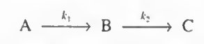
병렬반응: 두 가지 다른 경로의 반응이 존재
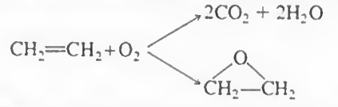
복합반응:병렬+직렬
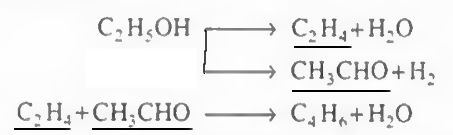
독립반응
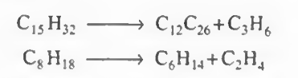
(주석:이들 중에는 복합반응이 가장 많은 경우를 차지한다고 볼 수 있어.
복합반응은 병렬과 직렬 반응이 동시에 일어나거나 연속적으로 발생하는 경우라, 실제 화학 공정에서는 병렬반응과 직렬반응을 모두 포함하는 복잡한 경로가 많기 때문이야. 예를 들어, 특정 생성물을 얻는 동안 원하지 않는 부반응이 연속적으로 발생하거나, 생성된 중간 생성물이 다시 다른 반응에 참여하는 경우가 많아지기 때문에 자연스럽게 복합반응이 가장 흔하게 나타나는 유형이지.)
2)선택도 파라미터를 정의한다.
선택도는 복합반응에 필수적으로 쓰이는 파라미터인데, 한 생성물이 다른 생성물에 비해 어느 정도 유리한지 나타낸다.
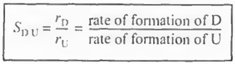
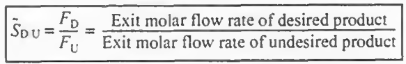
선택도=원하는 생성물 몰수/원하지 않는 생성물 몰수
주석:선택도와 수율!
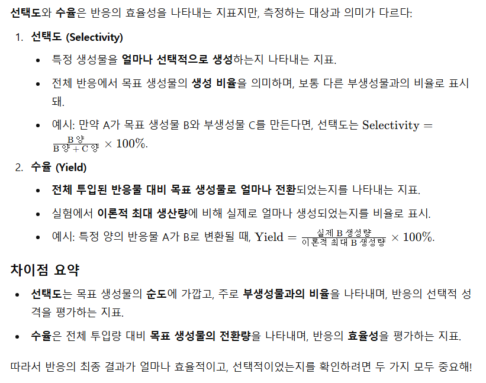
일반적인 정의는 이렇지만 선택도와 수율은 정의하기 나름이라.. 문헌을 읽을 때는 저자가 선택한 선택도와 수율에 대한 정의를 주의깊게 보아야 한다.
3)반응조건과 반응기를 적절히 선택함으로써 원치않는 부가반응을 최소화하는 방법들에 대해 논의한다.
1.병렬반응
일단 병렬반응을 생각해보자.
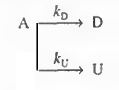
이때, D는 원하는 물질이고 U는 원하지 않는 물질이다. 따라서 D의 선택도를 높여야 한다.
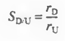
선택도의 정의에 따라 수식을 써보자.
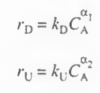
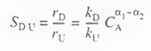
수식에 따라 선택도는 위와같다. 이때 이 선택도를 높이기 위한 방법을 찾아야 한다.
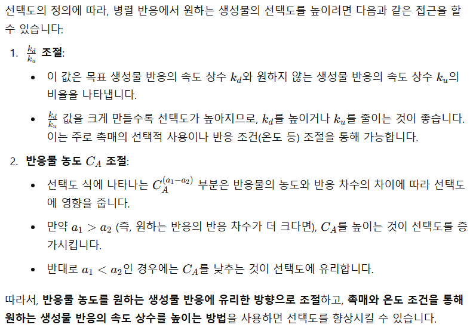
즉 원하는 반응의 반응차수가 높다면 CA를 높이기 위해 회분식이나 PFR을 사용해야 하고, 원하는 반응의 반응차수가 낮다면 반응물 농도를 낮추기 위해 CSTR을 사용해야 한다.
또한 kd/ku값을 조절하는 방법도 알아보자.
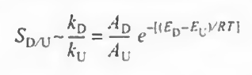
k값을 아레니우스 식으로 나타내면 위와같다.
원하는 반응의 활성화E가 더 큰 경우 온도를 높여야 하고 원하는 반응의 활성화E가 낮다면 온도를 저온에서 진행시켜야 한다. 그러나 이때 선택도는 높아져도 반응속도와 전화율은 낮아질 수 있다!
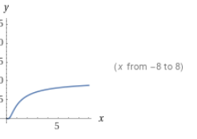
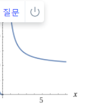
정리: 병렬반응에서 원하는 반응과 원하지 않는 반응의 차수와 활성화E를 비교한다. 원하는 반응의 차수가 크면 농도를 높이고, 활성화에너지가 크면 온도를 높인다. 농도를 높이려면 PFR을, 낮추려면 CSTR을 쓰고 온도를 낮출때에는 반응속도와 전화율을 고려해야한다.
예제:트람보제 반응에서 선택도의 최대화
트람보제 반응이라고 불리는, A가 분해되어 X Y B를 생성하는 반응이 있다. 이러한 기상반응의 속도식은 다음과 같다.
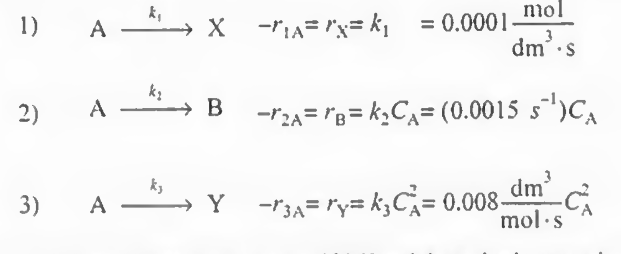
여기서 비반응속도는 300K에서 측정되었다. 반응 1 2 3의 활성화에너지는 각각 다음과 같다.
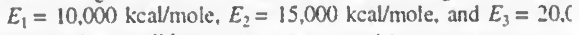
A의 농도가 0.4M이고 부피 유량 속도가 2dm^3/s일 때 B의 선택도를 최대화하기 위한 조건(반응기 종류, 온도, 농도)는 어떻게 되는가?
풀이: 일단 B의 선택도에 관한 식을 쓰면 다음과 같다.
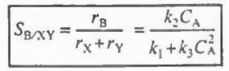
이를 수를 대입하여 그래프로 나타내보면 다음과 같다.
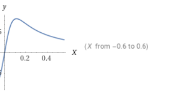
이때 최대값에서 x값은 다음과 같다. 이 값은 0.112정도에 근사된다.
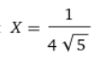
따라서 농도 CA가 0.112 mol/dm^3일 때 가장 선택도가 높다. 따라서 농도 CA가 0.112 mol/dm^3로 고정되는 CSTR을 사용하기로 한다. 이때 선택도는? 대입시 84%정도가 나온다.
이제 반응기 종류와 농도가 구해졌으므로 온도에 대해 쓸 차례다. 이때 k1, k2, k3는 변수가 되고 농도는 고정시킨다.
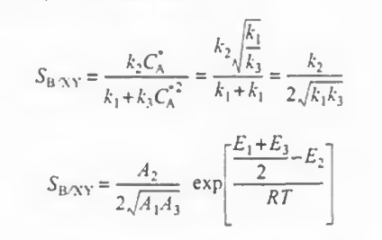
또는 원하는 반응과 부반응 간의 활성화 E를 비교해봐도 된다.
E2와 (E1+E3)/2 를 비교했을 때, 둘이 같으므로 이 값은 0이 된다. 따라서 이 반응은 선택도가 온도에 독립적인 반응이다!
이제 CSTR의 부피와 A의 전화율도 한번 구해보자.
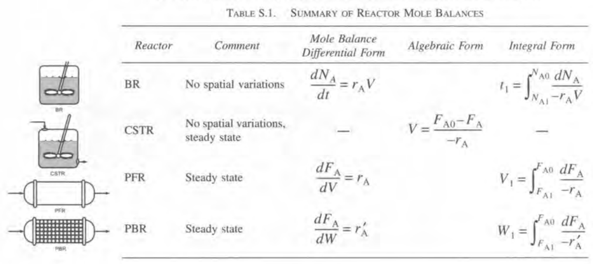
여기서 FA0-FA=v(CA0-CA)로 두고 계산할 것이다. v항을 없애기 위해 CSTR의 특성시간인 공간시간을 고려해보자.
CA0=0.4mol/dm^3, CA=0.112mol/dm^3이고 v=2.0dm^3/s 이므로 대입시
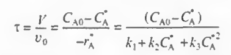
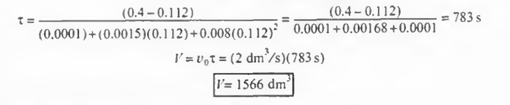
이렇게 계산된다. 그냥 수식을 넣은 것에 불과하다.
이때 전화율 X는 사실 병렬반응에서는 잘 쓰지 않지만 일단 구해보도록 하자.
전화율의 정의에 의해
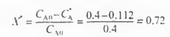
따라서 1566dm^3의 부피를 가지는 CSTR을 사용시 출구농도가 0.112mol/dm^3가 되고 이때 전화율은 72%이다. 이때가 가장 선택도가 높으며 그때 선택도는 84%가 찍힌다.
예제 2:비목적 생성물을 줄이기 위한 조건의 선택
다음 병렬반응에서 모든 반응 차수의 가능한 조합을 생각하고, Sd/u를 최대화하기 위한 조건을 쓰시오.
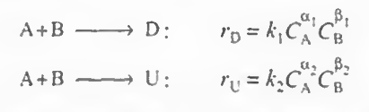
풀이: Sd/u를 써보면 다음과 같다.
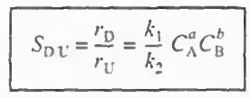
이때 a는 a1-a2, b는 b1-b2로 가정한다.
이때 a가 양수, 음수, 0인경우/ b가 양수,음수,0인 경우가 존재한다.
1)a가 + b가 +
2)a가 + b가 0
3)a가 + b가 -
4)a가 - b가 +
5)a가 - b가 0
6)a가 - b가 -
여기에 더해 k의 조합은 온도를 고려할 때 생각해본다.
위에 기술된 정리를 가져와본다.
정리: 병렬반응에서 원하는 반응과 원하지 않는 반응의 차수와, 활성화E를 비교한다. 원하는 반응의 차수가 크면 농도를 높이고, 활성화에너지가 크면 온도를 높인다. 농도를 높이려면 PFR을, 낮추려면 CSTR을 쓰고 온도를 낮출때에는 반응속도와 전화율을 고려해야한다.
1)a가 + b가 +
이때는 CA와 CB둘다 농도가 높을 수록 선택도가 높아진다.
이때는 PFR이나 BATCH가 좋은 선택이다.
2)a가 + b가 0
이때는 CA가 농도가 높아야 한다.
이때는 PFR이나 BATCH가 좋은 선택이다.
3)a가 + b가 -
이때는 CA는 높고 CB는 낮아야 한다.
이때는 많은양의 A에 B를 천천히 유입시키는 반회분 반응기. 또는 B를 반응기 측면으로 연속적으로 유입시키는 멤브레인 반응기, 혹은 CSTR을 연결하고 B를 각 반응기에 조금씩 유입시키는 직렬연결형 CSTR
4)a가 - b가 +
이때는 CA는 낮고 CB는 높아야 한다.
이때는 많은양의 B에 A를 천천히 유입시키는 반회분 반응기. 또는 A를 반응기 측면으로 연속적으로 유입시키는 멤브레인 반응기, 혹은 CSTR을 연결하고 A를 각 반응기에 조금씩 유입시키는 직렬연결형 CSTR
5)a가 - b가 0
이때는 CA는 낮아야한다.
이때는 CSTR이 좋은 선택이다.
6)a가 - b가 -
이때는 CA는 낮고 CB도 낮아야 한다.
이때는 CSTR이 좋은 선택이다. CSTR은 반응물의 농도를 지속적으로 낮게 유지하면서 반응시킬 수 있다.
이제 온도의 영향을 고려해보자. 아레니우스 식에 따라 k1/k2값은 다음과 같다.
이때 온도에 따른 선택도는 다음과 같다.
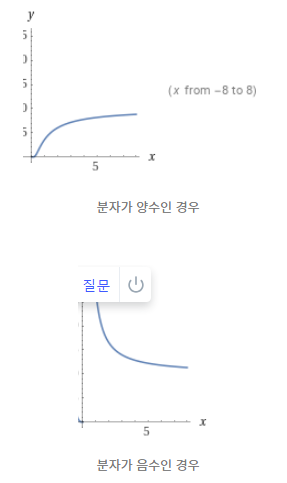
분자가 양수인 경우엔 온도가 높아야 되고 분자가 음수인 경우에는 온도가 낮아야 선택도가 높아진다.
2.직렬반응
이제 직렬반응을 생각해보자.
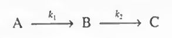
여기서 가장 중요한 변수는 시간이다. CSTR은 공간시간, 회분식반응기는 실제시간을 쓴다. 직렬 반응에서 시간이 중요한 이유는, B가 목적생성물이라면 시간이 지남에 따라 C가 만들어져 부산물이 만들어질 수 있기 때문이다. 따라서 어떤 반응이 직렬이라면 반응시간을 정확히 계산하는 것이 중요하다.
여기에 대한 예제를 풀어보자
다음반응이 있을때, 중간체의 농도를 공간시간의 함수로 구하여라.
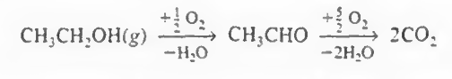
먼저 위 반응을 아래처럼 간략화해본다. 이 간략화는 몇가지 가정이 필요하긴하다.
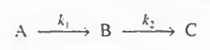
이제 반응을 쪼개어 다음처럼 나타내보자.
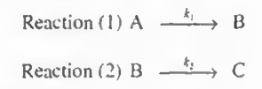
이제 1번과 2번 각각에 대한 몰 수지, 속도식, 화학양론을 작성할 것이다. 이때 전화율이 아닌 예비설계식을 사용한다.
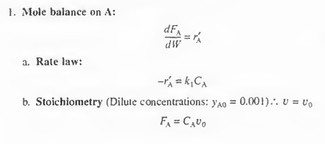
합치면 다음처럼 된다.
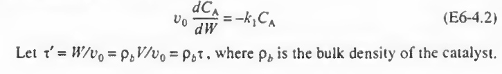
이때, 공간시간을 도입하기 위해 위 사진의 아랫줄처럼 치환을 하고 적분하면 다음과 같다. (W=0에서 CA=CA0)
v0 dCA/CA=-kdW
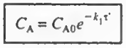
이제 B에 대한 식을 세워보자
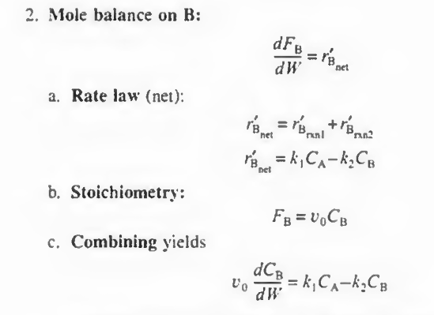
이제 CA값을 대입하고 변수 분리 후 적분하면 다음과 같다.
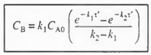
이제 CA와 CB를 모두 공간시간의 함수로 나타내었다.
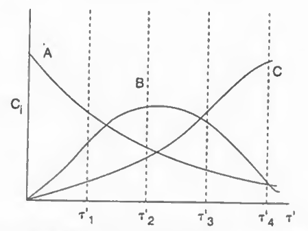
그래프를 도시하면 위와 같다.
이때 B의 최댓값 부분의 공간시간은 다음과 같다.
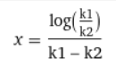
따라서 이게 최적의 공간시간이며 이때 가장 높은 B의 수율이 나온다.
4)복합반응이 포함된 반응공학 문제를 푸는 데 사용되는 알고리듬을 전개한다.
먼저 복합반응계에서는 절대 전화율로 전개된 식(ch1~4)을 쓰면 안된다! (주석: 전환율 하나만으로 모든 반응을 설명하기 어렵기 때문이야. 복합반응계는 여러 반응 경로와 중간 생성물을 포함하는 경우가 많아서, 각 반응의 특성을 별도로 고려해야 해.)
전화율 대신, 액상계라면 농도를, 기상계라면 몰유량 F를 사용하도록 한다. 다음 표는 복합반응에서 사용하는 몰 수지식의 형태를 보여준다. 여기서 말하는 ra와 rb는 알짜 반응속도이다.
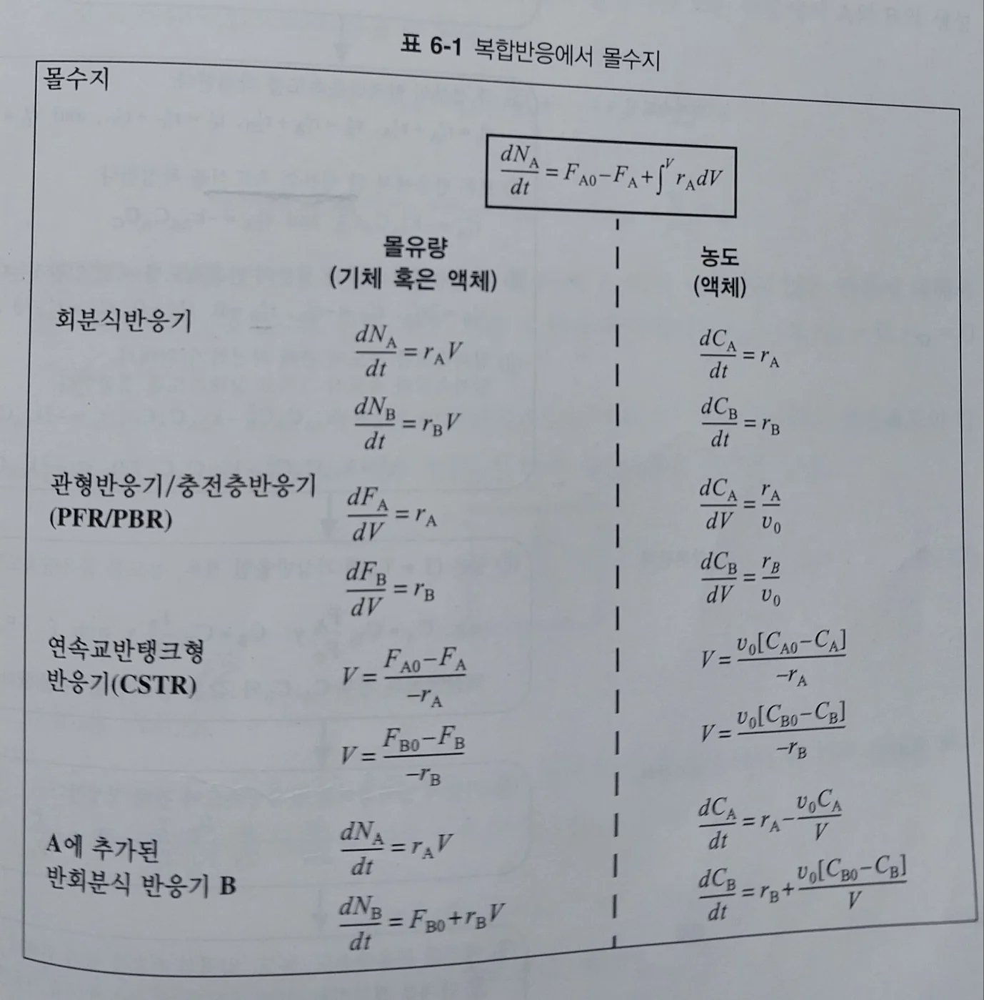
다음으로, 각 반응들에 모두 번호를 매긴다. 이후 모든 성분 각각에 대한 몰 수지를 적용한다(위 표 참고). 이후 각 성분의 알짜속도식을 작성하고, 한 성분의 속도식을 구체적으로 작성한다. 이후 다른 성분들을 한 성분의 속도로 연관짓는다. 이후 알짜속도와 속도과 상태속도를 결합한다.
이후 등온 기상 반응일 경우에 농도를 몰유량속도에 관해 작성한다. 액상반응인 경우 농도만을 사용한다. 다음으로 기상일 경우 압력강하를 몰유량속도에 관해 작성한 후 컴퓨터로 풀이한다.
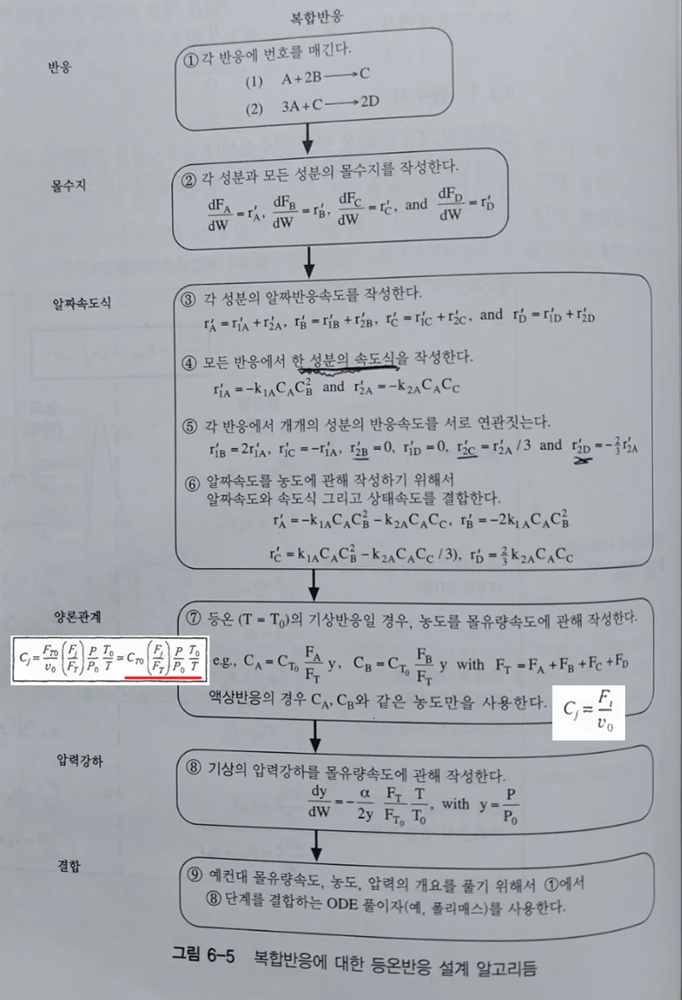
3스텝에서 다 더하기로만 작성해라! 7번 스텝에서 다음 빨간 박스 식이 쓰였다. 절대 전화율에 관련된 식을 쓰면 안된다! 8번은 압력강하가 있다면 한다.
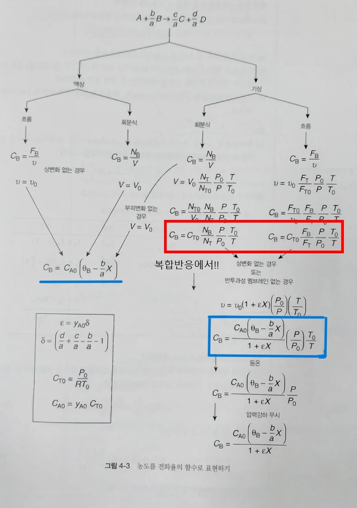
일단 예제를 통해 복합반응의 메커니즘을 적용해보는 연습을 하자
예제 1: 다음 식에서 각 성분들에 대한 속도식을 구하고, NO, O2. N2의 알짜생성속도를 구하고 몰 수지를 결합하여 최종적인 부피를 구하여라.
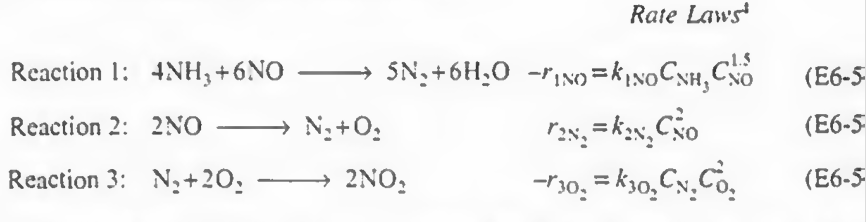
풀이:
일단 반응에 번호를 매겼다. 1 2 3번으로.
그다음에 각 성분들의 알짜속도식을 작성해본다. 다 더하기로만 작성해라!
NH3: +r1(NH3)
NO: +r1(NO)+r2(NO)
N2: +r1(N2)+r2(N2)+r3(N2)
H2O: r1(H2O)
O2: r2(O2)+r3(O2)
NO2: r3(NO2)
이제 상대속도식을 세워본다.
반응1: -r1(NH3)/4 =- r1(NO)/6 = r1(N2)/5= r1( H2O )/6
반응2: -r2(NO)/2 = r2(N2) = r2(O2)
반응3: - r3(N2) = - r3(O2)/2 = r3(NO2) /2
이후 각 반응에서 한 성분의 속도식 (- r1(NO), r2(N2), - r3(O2) ) 의 속도식이 주어졌으므로 이를 통해 나머지 속도식을 알 수 있고 이들을 알짜속도식에 대입하여 총 반응속도를 구할 수 있다.
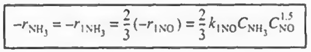
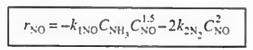
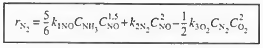
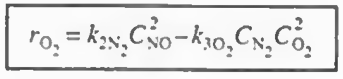
결과만 나타내면 위와 같다. 그냥 산수이므로 직접 해보자.
이제 속도식에 농도항이 있으므로 농도에 관해 알아보자.
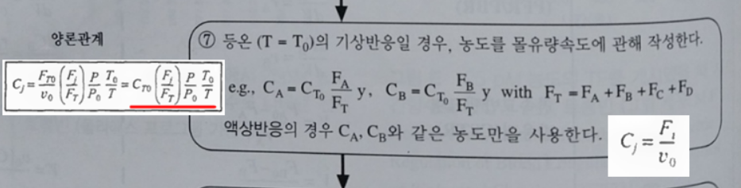
이 반응은 기상반응이고, 등온 등압임을 가정해보자. 그러면 다음과 같은 식이 나온다
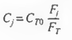
이제 몰 수지를 불러오자.
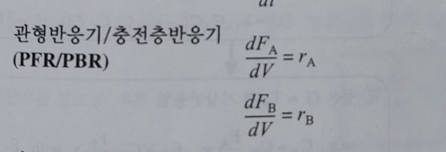
각 성분에 대해 몰수지와 속도법칙, 화학양론을 결합한다
여기까지 오면 모든 성분에 대해 각각의 몰수지, 속도식, 화학양론이 결합되었다.
이제 CT0, FT, P0, k값 등이 주어지면 대입하여 계산할 수 있다.
이 위의 설명과 예제를 여러번 반복해서 보자.. 아마 까먹어도 잘못은 아니다. 그때그때 차근차근따라하길 바란다.
6.7:복합반응에서 선택도 향상을 위한 멤브레인 반응기
멤브레인 반응기란?
반응기와 분리막을 결합한 장치로, 화학 반응과 분리를 동시에 수행하는 혁신적인 시스템입니다. 주로 선택적으로 물질을 투과시키는 멤브레인을 사용하여 반응물이나 생성물의 이동을 제어해 반응의 효율을 높이는 방식입니다. 멤브레인 반응기는 다양한 공정에서 활용되며, 일반 반응기 대비 반응 속도, 선택성, 효율 향상에 유리합니다. 주요 개념을 단계별로 살펴보면 다음과 같습니다.
1. 멤브레인 반응기의 구조와 작동 원리
- 반응과 분리의 동시 진행: 멤브레인 반응기에서는 반응이 일어나는 동안 특정 물질이 멤브레인을 통해 선택적으로 투과하여 다른 쪽으로 이동할 수 있습니다. 예를 들어, 수소만 투과할 수 있는 멤브레인을 사용해, 반응 과정에서 생성된 수소를 바로 분리함으로써 평형이 수소의 제거 방향으로 치우치게 할 수 있습니다.
- 멤브레인 선택성: 멤브레인은 특정 물질에 대해 투과성이 높고, 다른 물질에 대해선 낮게 설계되어 있습니다. 예를 들어, 수소 선택적 멤브레인은 수소 분자만 통과시키고, 다른 물질은 차단합니다. 이를 통해 생성물만 분리하여 선택성을 높이거나 반응물의 농도를 조절해 반응 효율을 극대화할 수 있습니다.
복합반응에서 선택도 향상을 위해 멤브레인반응기를 사용할 수 있다.